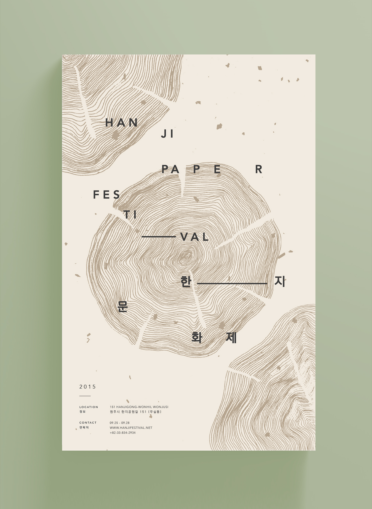
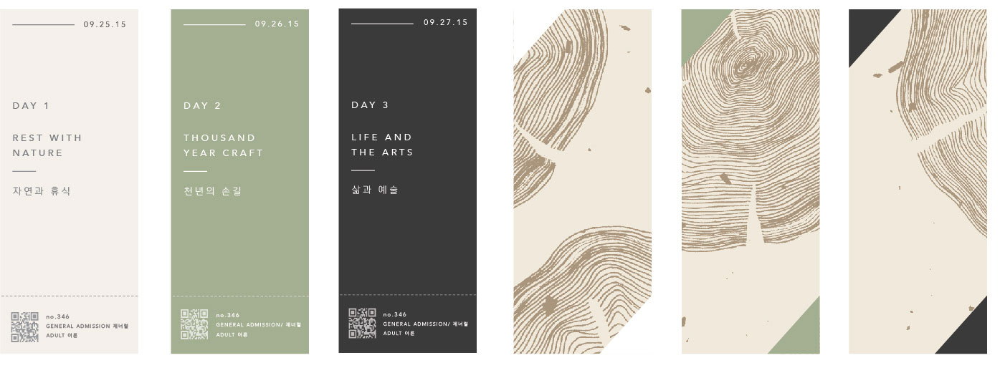

Hanji Paper Festival
Hanji Festival is a Festival that takes place in South Korea during autumn. It's dedicated to korea's traditional handmade paper - better known as "hanji". hanji is made out of mulberry pulp, and this paper is known to last for 1,000+ years. This festival showcases the making, fashion and art based on hanji.

This poster encapsulates hanji's traditions, as the poster is made from hanji paper and has an illustration of the mulberry tree's ring pattern. The earthy colours represent the traditions of the origin of hanji in its rawest form. The black coloured typography represent the black ink that was often used on hanji, with a modern, minimal twist to it.
